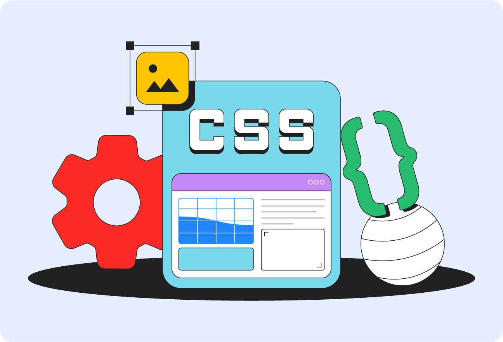

CSS (Cascading Style Sheets), que en español significa Hojas de Estilo en Cascada, es un lenguaje utilizado para diseñar y dar estilo a las páginas web. Sirve para modificar la apariencia de los elementos de una página, como los colores, los tipos y tamaños de letras, los fondos, los márgenes, los bordes, las imágenes y la distribución del contenido. CSS permite que las páginas web sean más atractivas, organizadas y fáciles de utilizar. También ayuda a adaptar el diseño de una página a diferentes dispositivos, como computadoras, tabletas y teléfonos móviles. CSS trabaja junto con HTML, que se encarga de crear y estructurar el contenido de la página, mientras que CSS se ocupa de su presentación visual. Además, permite reutilizar estilos en varias páginas, lo que facilita mantener un diseño uniforme y realizar cambios de manera sencilla. En conclusión, CSS es una herramienta fundamental en el desarrollo web porque permite mejorar la apariencia, la organización y la presentación de los sitios de Internet.
